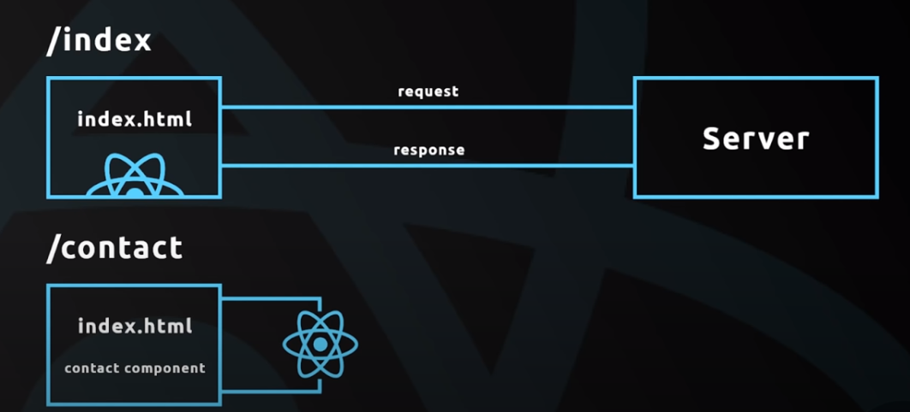

Your browser doesn't support the features required by impress.js, so you are presented with a
simplified version of this presentation.
For the best experience please use the latest Chrome, Safari or Firefox browser.
Single Page Application
Anastazja Reinisch, 146942
What is a SPA?
Design pattern for web app.
An app that works inside a browser and does not require page reloading during use.
A quick overview of how does it work

Pros and Cons
Pros:
Less complex dynamic components building
Less complex large and non-trivial websites building
Better user experience
Less load on the server: SPA can cache any local storage effectively. An application sends only one request, store all data, then it can use this data and works even offline.
Better client-server interaction, the dividing of front-end’s and back-end’s concerns
Low cost of support in the long term
Cons:
Complexity:
It is slow to download because heavy client frameworks are required to be loaded to the client.
Compared to the “traditional” application, SPA is less secure. Due to Cross-Site Scripting (XSS), it enables attackers to inject client-side scripts into web application by other users.
You need more time to create a minimum viable product (MVP), really tho?
When to use?
Medium or large scale websites, or websites with much dynamics and state:
Websites with a lot of user interfaces.
SaaS platforms
data-driven and form-intensive applications
mobile applications
desktop applications
Myths on SPA
SEO optimization ( Next.js - SSR for indexing reasons)
Google Analytics won't work (TIP: USE page load events) - HOWTO